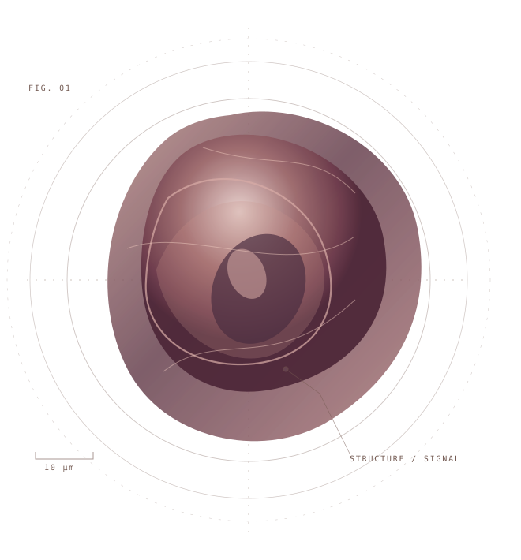
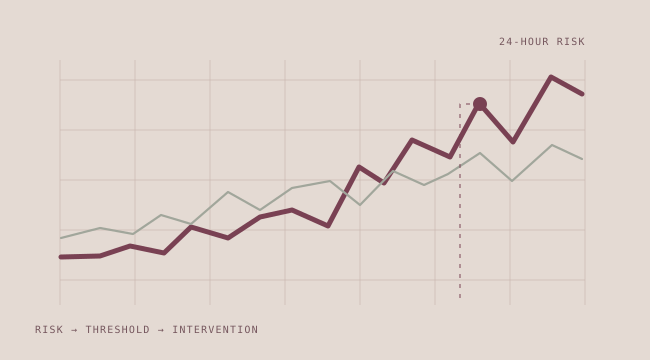
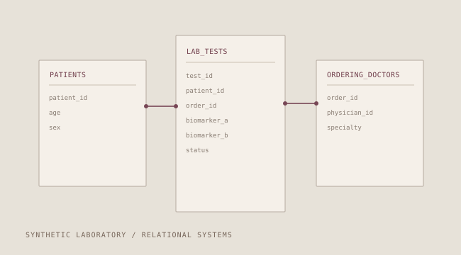

Evidence,
with context.
I'm Elizabeth Ball, a translational scientist bridging molecular biology, clinical research and applied machine learning. I build rigorous, interpretable approaches to complex health questions — and care just as much about what the data can't tell us.

FIG. 001 / FORM & EVIDENCEA STUDY IN SYSTEMSMOLECULES / MODELS / MEANING
Research, made tangible.
Selected public-data and synthetic-data studies. Reproducible methodology, careful validation and honest limits over headline performance.

Endometriosis Biomarker Signal Lab
Nested validation and uncertainty-aware modelling for circulating miRNA biomarkers.

Thyroid Eye Disease Signal Lab
Holding tissue constant and validating at the level of independent people.

Before Suzy Misses a Sale
From synthetic telemetry and predicted risk to practical intervention decisions.

Synthetic Diagnostic Laboratory
A relational SQL environment designed around clinical laboratory workflows.
Good science isn't just finding a signal. It's knowing what that signal means.
Data are shaped by sampling, measurement, missingness and the choices we make before a model is ever trained.
I work across the full translational path — from biological specimens and assay behaviour to statistical inference and real-world decisions.
Curiosity, disciplined.
The questions I ask before treating a prediction as evidence.
Begin with the system.
Understand the specimen, experimental workflow, underlying mechanism and what an observed measurement can represent.
Protect the analysis.
Check provenance, confounding, leakage, independent sampling units and model stability before reporting performance.
Make meaning useful.
Explain uncertainty, trade-offs and decision thresholds in language that scientists, clinicians and collaborators can act on.
Across the bench, the code, and the clinic.
I'm a Canadian scientist with an MSc in Medical Science and a background in infection and immunity, translational research, patient-facing study work and applied analytics.
As Director of Translational Science, my work connects assay development and molecular measurements to computational analyses, biomarker modelling and questions of clinical utility. I've worked with qPCR, sequencing-derived data, immunoassays and high-dimensional datasets, as well as statistical learning and reproducible software workflows.
My interests include inflammation, precision medicine, rare disease, women's health, exercise science and the exposures that shape human health across the life course.
Explore the code ↗Practice / methods
Ideas in progress.
Short reflections on the space between measurement, interpretation and the world outside the lab.
The space between signal and noise
Why repeatability, biology and independent validation deserve more attention than a single performance metric.
Meet Veyra.
Alongside scientific research, I explore how evidence becomes lived experience through visual storytelling, place and practice. A separate creative home, built around curiosity.
Explore Veyra ↗Curiosity is collaborative.
Interested in translational research, responsible biomarker development or projects that connect science and human experience? Explore my public work and connect through the channels below.